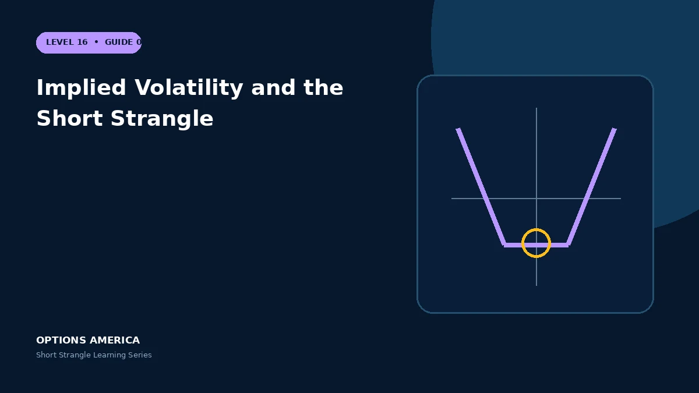

Understand negative vega, skew, volatility expansion and event crush across two OTM short options.
Negative vega
Both options are short, making the position generally negative vega. An IV increase raises theoretical repurchase cost even if price remains between strikes.
Put skew
OTM puts often trade at higher IV than OTM calls. Selling the put may collect more premium because the market prices more downside demand and crash risk.
Event crush
Volatility can decline after an announcement, helping both legs, but a gap may create intrinsic loss larger than the volatility benefit. Test price and IV together.
Dynamic surface
During a selloff, put skew and overall IV can steepen while the underlying approaches the put strike. Parallel-vega estimates may understate the actual change.
A practical example
The put is sold at 32% IV and the call at 24% IV. A downside shock can raise both levels and steepen skew, increasing the put's price beyond a simple equal-IV estimate.
This simplified scenario focuses on selected outcomes; live prices and risks will differ. Live option prices also reflect the underlying price, time decay, rates, dividends, liquidity and transaction costs. Greeks are theoretical estimates, not guarantees.
Build a risk-first trading plan
Before using implied volatility and the short strangle, record the stock price, put and call strikes, expiration, total credit and contract multiplier. Calculate both breakevens, then estimate dollar loss beyond them under upside and downside gaps. A wide strike range improves the starting room but does not define either tail.
Stress several prices, time points and volatility levels, including a skew change that affects the put and call differently. Review delta, gamma, theta, vega and buying power for the complete portfolio. Multiple OTM positions can become tested together during a common market shock.
Define a profit target, maximum tolerated loss, tested-side trigger, margin reserve and latest exit date before entry. Decide whether an event is intentionally included and how assignment would be handled. Use multi-leg orders and confirm quantities after every fill, roll or partial close.
Document the result after exit, including slippage, assignment effects and the largest intraday exposure. Comparing the original forecast with the actual path helps distinguish a sound process from a lucky outcome and improves later strike, duration, margin-reserve and position-size choices under similar market conditions.
Frequently asked questions
Are call and put IV equal?
Not necessarily.
Does IV crush guarantee profit?
No.
Why is put IV often higher?
Demand and perceived downside risk influence skew.
Continue the Short Strangle cluster
Explore related guides: Short Strangle Greeks: Delta, Gamma, Theta and Vega · How to Adjust a Short Strangle · Short Strangle Profit, Loss and Breakevens. For a structured sequence, use the free Level 16 – Short Strangle course.
Options involve risk and are not suitable for every investor. This material is educational and is not investment, tax or legal advice. Greeks are theoretical estimates, and contract terms and broker requirements can vary.